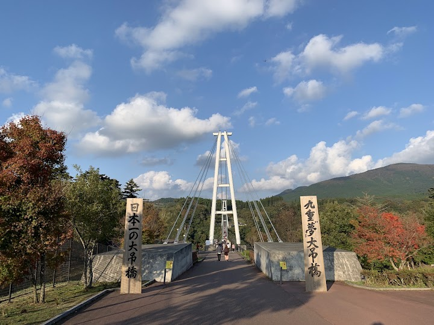
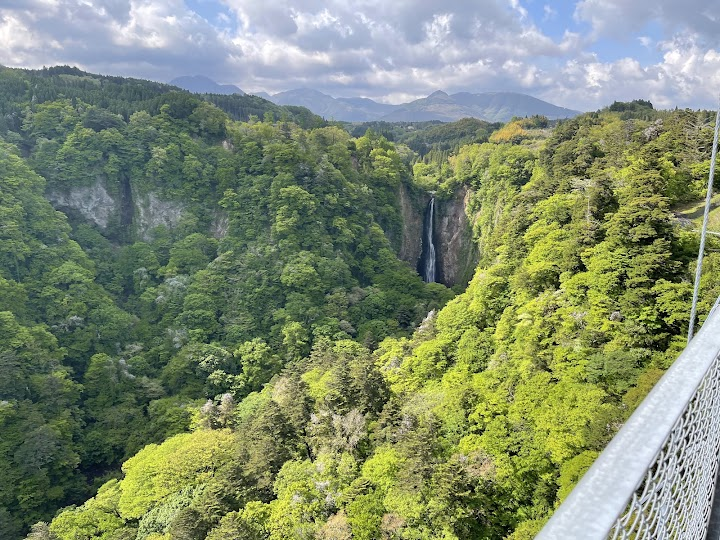
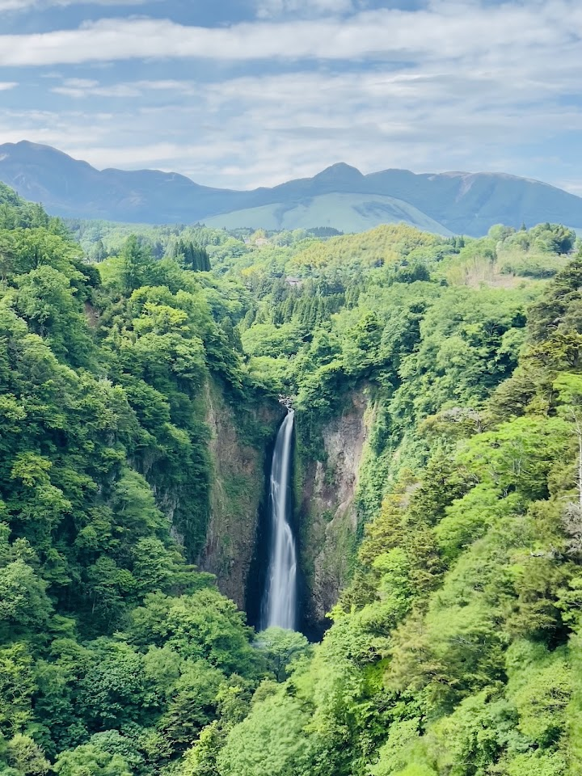
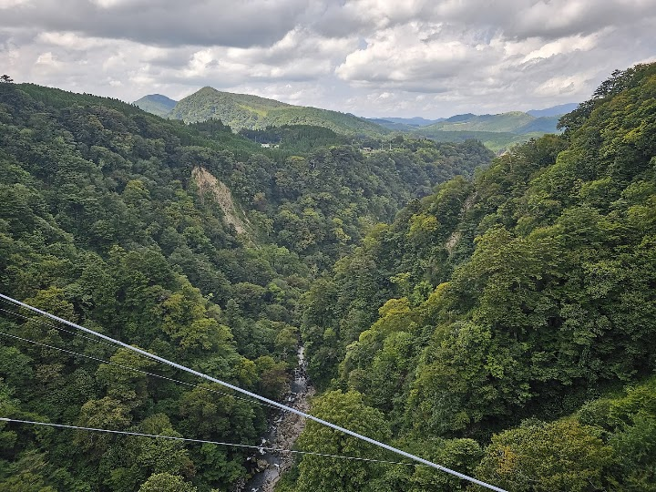
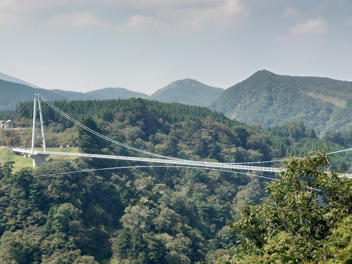

Kokonoe Yume Otsuribashi
Kokonoe Yume Otsuribashi is a pedestrian suspension bridge about 173 metres above the valley (568 feet), open since 2006, with views of waterfalls and forested hills. It feels exposed at first, and the bridge can be closed in strong wind.
Open in Google Maps (street view, more photos and reviews there)






Visitor tips on finding it and getting there
Amazing suspension bridge. The walk across takes about 8 minutes. Entry fee 500 Yen. On the other side there are some nice trails. The walk across is extremely windy so hold your hat.